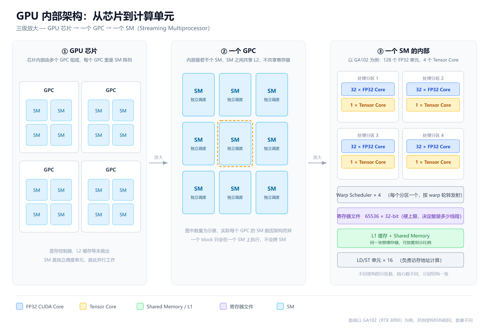

用编译器的输出当显微镜，讲清 SM、CUDA Core 和 Tensor Core
写 GPU 架构的文章，第一个坎是得先有张显卡。
我这台机器是 VMware 里的 openEuler，没做直通，没有独显。nvidia-smi 敲下去是 command not found。
后来发现，要把 SM、CUDA Core、Tensor Core 这几样东西讲清楚，大部分证据其实在编译期就拿到了，根本不需要把 kernel 跑起来。这篇文章记录整个过程，代码在 gpu-arch-lab 仓库里，文中的数字都能自己跑一遍核对。
无卡机器装 CUDA Toolkit 是可行的。跑不了 kernel，但 nvcc、ptxas、nvdisasm 三个工具都在，够用了。
sudo dnf install -y gcc gcc-c++ make wget # 只装 toolkit，--toolkit 会跳过驱动安装 sudo sh cuda_12.4.1_535.104.05_linux.run --silent --toolkit --override export PATH=/usr/local/cuda/bin:$PATH nvcc --version
装完 nvcc --version 有输出，nvidia-smi 依然找不到。这是预期行为，不是装错了。
SM（Streaming Multiprocessor）是 GPU 里真正干活的单元。要理解它，先得接受一件事：SM 的资源是硬的。
每个 SM 有 65536 个 32 位寄存器。这个数字焊在硬件里，改不了。你的 kernel 每个线程占多少寄存器，直接决定这个 SM 能同时塞下多少个线程。
先写一个故意吃寄存器的 kernel，用几条独立的数据依赖链逼编译器保留中间值。开头挂一个 __launch_bounds__(256, 6)，意思是"每个 block 256 线程，每个 SM 至少塞 6 个 block"：
__global__ void __launch_bounds__(256, 6)
heavy_kernel(const float* a, const float* b, float* c, int n)
{
int i = blockIdx.x * blockDim.x + threadIdx.x;
if (i >= n) return;
float x0 = a[i], y0 = b[i];
float x1 = x0 * y0, y1 = x0 + y0;
float x2 = x1 - y1, y2 = x1 * 0.5f;
float x3 = x2 * y2, y3 = x2 + y2;
float x4 = x3 / (y3 + 1.0f);
float x5 = x4 * x4, y4 = x4 - y3;
float x6 = x5 + y4, y5 = x5 * y4;
float x7 = x6 - y5, y6 = x6 + y5;
c[i] = x7 + y6 + x3 + y3;
}
这行 __launch_bounds__ 其实已经把这个 kernel 的寄存器预算定死了。6 个 block、每个 256 线程，就是 1536 个线程要共享 65536 个寄存器：
65536 ÷ (256 × 6) = 42.67 → 向下对齐到 8 的倍数 → 40
寄存器是按 8 个一组分配的，所以 42 用不上，只能给 40。加 -Xptxas -v 编译，ptxas 会把实际用量打出来：
nvcc -arch=sm_80 -Xptxas -v regs.cu -o /dev/null ptxas info : Used 40 registers, 344 bytes cmem[0]
40，和手算的一致。整个过程没有 GPU 参与——寄存器预算是编译期的事，ptxas 算完就写进 cubin 了。
再紧一点。把 6 改成 8，等于告诉编译器"我要塞 8 个 block"，预算直接砍到 32：
__global__ void __launch_bounds__(256, 8) heavy_bound8(...) // 函数体一模一样 $ nvcc -arch=sm_80 -Xptxas -v regs.cu -o /dev/null ptxas info : Used 40 registers, 344 bytes cmem[0] <-- heavy_bound6 ptxas info : Used 32 registers, 128 bytes spill stores <-- heavy_bound8
32 个寄存器，但多了 spill——装不下的中间值被赶到 local memory，那本质上是显存。省了寄存器，多了一次访存。
这段代码的算法一个字没改，只是改了个数字，编译器就换了一套策略。这就是为什么性能调优里最典型的取舍，往往是拿访存换并发。值不值，得先知道 40 个和 32 个分别能换来多少并发。手算一遍，每个 block 256 个线程：
| 每线程寄存器 | 每 block 占用 | 可驻留 block | 活跃 warp |
|---|---|---|---|
| 32 | 8192 | 8 | 64（满） |
| 40 | 10240 | 6 | 48 |
| 64 | 16384 | 4 | 32 |
| 128 | 32768 | 2 | 16 |
32 个寄存器时，8 个 block × 8 个 warp = 64 个 warp，正好顶到 SM 的上限。回到编译器实际给的 40 个，就只能挂 6 个 block、48 个 warp，掉了四分之一。要是用到 128 个，只剩 16 个 warp。
注意 65536 除不尽的那些零头会被直接扔掉——SM 不会把一个 block 拆开塞。这就是为什么寄存器用量常常是"跳变"的，34 个和 40 个可能落在同一档。
这就是 SM 的真实形态：一个装得下有限资源的盒子，不是一堆算力的简单相加。
寄存器是"能装多少"，指令是"怎么算"。同一个矩阵乘，写两个版本：
// A：标量循环，走 CUDA Core
for (int k = 0; k < K; ++k)
acc += __half2float(A[row * K + k]) * __half2float(B[k * N + col]);
// B：wmma，走 Tensor Core
wmma::fragment<wmma::matrix_a, 16, 16, 16, half, wmma::row_major> frag_a;
wmma::fragment<wmma::matrix_b, 16, 16, 16, half, wmma::row_major> frag_b;
wmma::fragment<wmma::accumulator, 16, 16, 16, float> frag_c;
wmma::fill_fragment(frag_c, 0.0f);
for (int k = 0; k < K; k += 16) {
wmma::load_matrix_sync(frag_a, A + tile_m * 16 * K + k, K);
wmma::load_matrix_sync(frag_b, B + k * N + tile_n * 16, N);
wmma::mma_sync(frag_c, frag_a, frag_b, frag_c);
}
编译成 cubin 再反汇编，看 SASS 里到底生成了什么：
nvcc -arch=sm_80 -cubin mma.cu -o mma.cubin nvdisasm -c mma.cubin | grep -E "FFMA|HMMA" /* gemm_fma 里 */ FFMA R5, R2, R3, R5 /* gemm_wmma 里 */ HMMA.16816.F32 R4, R8, R12, R16
这两条指令的区别，就是 CUDA Core 和 Tensor Core 的区别。
FFMA 一次算一个乘加。HMMA.16816.F32 里的 16816 是形状：16×8 的输出块、K 方向 16，一条指令吞掉 2048 次乘加。
所以 Tensor Core 不是"更快的 CUDA Core"，也不是"一堆小核拼起来的"。它是一条专用指令，背后是一条专用的数据通路。你在 CUDA 层面写的是 wmma::mma_sync，落到硬件上就是一条 HMMA。
这也解释了一个常见误解：Tensor Core 只对矩阵乘有用。你做逐元素运算、做规约、做排序，它帮不上忙，那些活还是 CUDA Core 干。
把上面的算法写成脚本，纯 CPU 就能跑，不需要显卡：
python3 occupancy.py --arch sm_80 --threads 256
跑出来是这样：
架构 sm_80 每 block 256 线程 shared mem 0 字节
regs blocks warps occupancy 瓶颈
--------------------------------------------------------------
24 8 64 100.0% warps
32 8 64 100.0% regs
40 6 48 75.0% regs
48 5 40 62.5% regs
64 4 32 50.0% regs
96 2 16 25.0% regs
128 2 16 25.0% regs
168 1 8 12.5% regs
255 1 8 12.5% regs
这张表值得逐行看。
24 个寄存器的时候，瓶颈是 warp 槽位——SM 最多只能挂 64 个 warp，寄存器还有富余。到 32 个，两者同时到顶，100%。再往上就开始掉：40 掉到 75%，64 掉到 50%，168 以上只剩 12.5%。
也就是说，一个"顺手多写了几个局部变量"的改动，可能让 SM 的驻留能力腰斩。这也是为什么优化 kernel 的第一件事往往是砍寄存器，而不是改算法。
那问题来了：GPU 为什么要堆这么多计算单元？
因为 GPU 的核心矛盾是延迟。显存访问一次要几百个周期，这几百个周期里计算单元是闲着的。GPU 的解法不是让单个单元跑得更快，而是放足够多的 warp 进去，一个卡住了立刻切下一个。
所以 occupancy 高不代表算力用满了，它代表有足够的备胎。这就是延迟隐藏。计算单元堆这么多，不是为了同时全速运转，是为了在等待时还有活干。
前面所有实验都在虚拟机里完成。缺的那一半是物理规模：这张卡到底有几个 SM。
租一台按量计费的 T4 实例，跑一次就够：
nvcc -arch=sm_75 device_query.cu -o device_query ./device_query GPU : Tesla T4 Compute Capability : 7.5 --- 芯片级 --- SM 数量 : 40 显存 : 15.0 GB --- 单个 SM 内部 --- 每 SM 寄存器 : 65536 个 每 SM shared memory : 64 KB 每 SM 最大线程 : 1024 warp 大小 : 32 线程
拿到 SM 数量和每 SM 的寄存器数，前面算的模型就闭环了。跑完释放实例，成本通常几块钱。
顺带提一句：T4 是 Turing 架构，每 SM 最大线程 1024，也就是 32 个 warp 槽位；A100 是 2048 和 64。同一份代码换张卡，occupancy 就不一样了——所以性能调优永远要针对具体架构，别拿一张卡的经验套另一张。
把上面这些拼起来，就是 GPU 的层级结构：

三级放大，每一级解决一个问题。
芯片级：一堆 GPC，每个 GPC 里是一组 SM。这一级看的是规模，也就是"这卡有多少个 SM"，直接对应算力和价格。
GPC 级：SM 之间互相独立，各跑各的。一个 block 只会在一个 SM 上执行，永远不会跨 SM。这一级看的是并行度——你的 grid 再大，也是被拆散到各个 SM 上。
SM 级：内部再分四个处理分区，每个分区有自己的 CUDA Core 和 Tensor Core，共享一个寄存器文件、一块 L1/Shared Memory、一组 LD/ST 单元。这一级看的是资源约束——前面算的 65536 个寄存器就在这儿。
所以"SM 是一个资源受限的盒子"这句话，在图上就是那个框。你写的每个 kernel，最终都是在往这个框里塞线程。
这套方法最有价值的地方，不是省了一张显卡的钱。
而是编译器输出是一台免费的显微镜。你看不到 SM 内部，但你能看到编译器为它生成的代码；你数不了物理上的 CUDA Core，但你能看到它被调用的方式。从 -Xptxas -v 那行输出开始，硬件就不再是黑盒了。
仓库在 github.com/qhc0609/gpu-arch-lab，四个实验都能在没显卡的机器上跑完。如果你手上有卡，把 04_cloud_probe 也跑一遍，数字会更完整。
代码与数据：github.com/qhc0609/gpu-arch-lab ｜ 环境：openEuler 24.03 + CUDA 12.4（无 GPU）